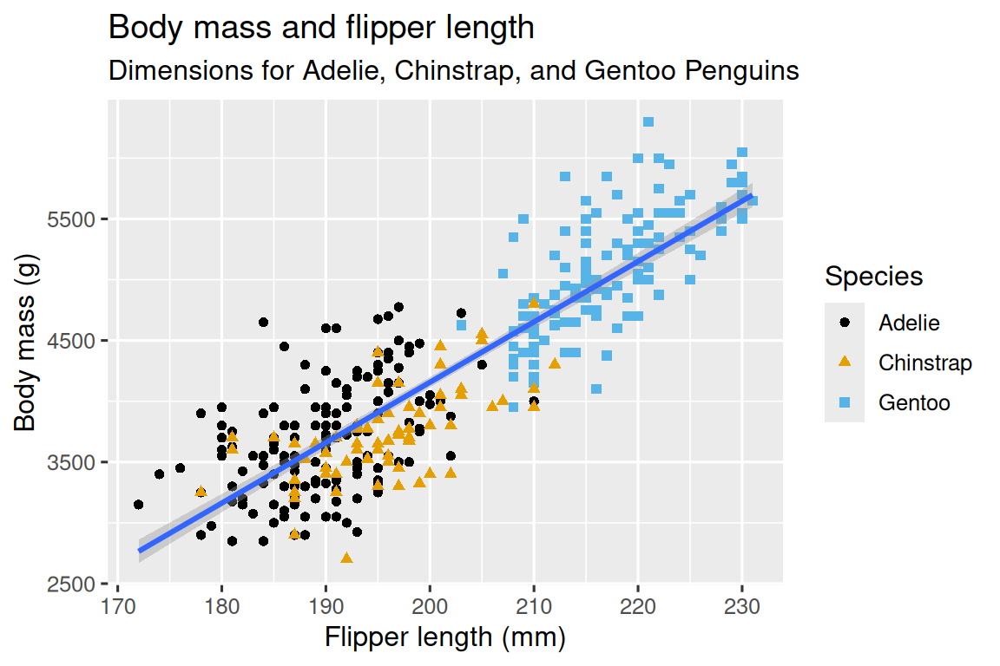
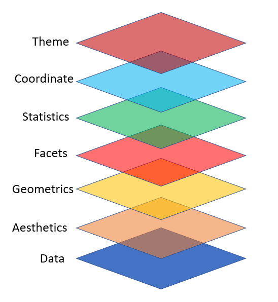
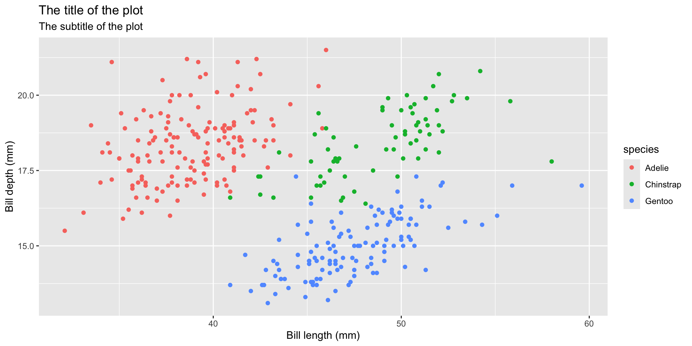
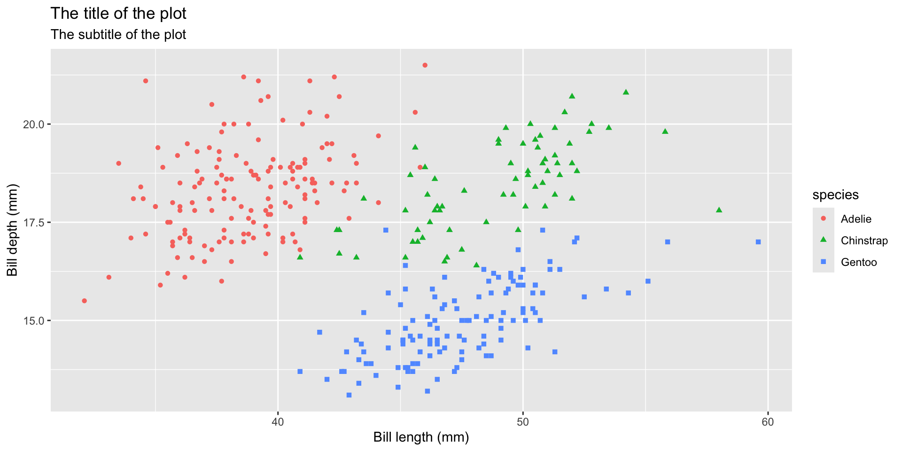
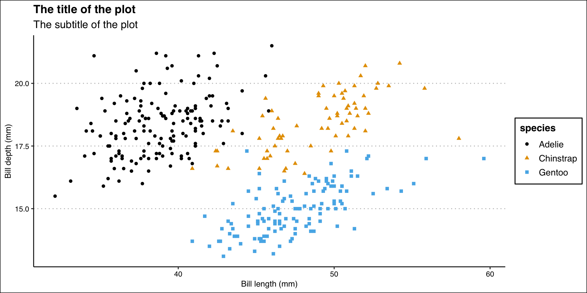
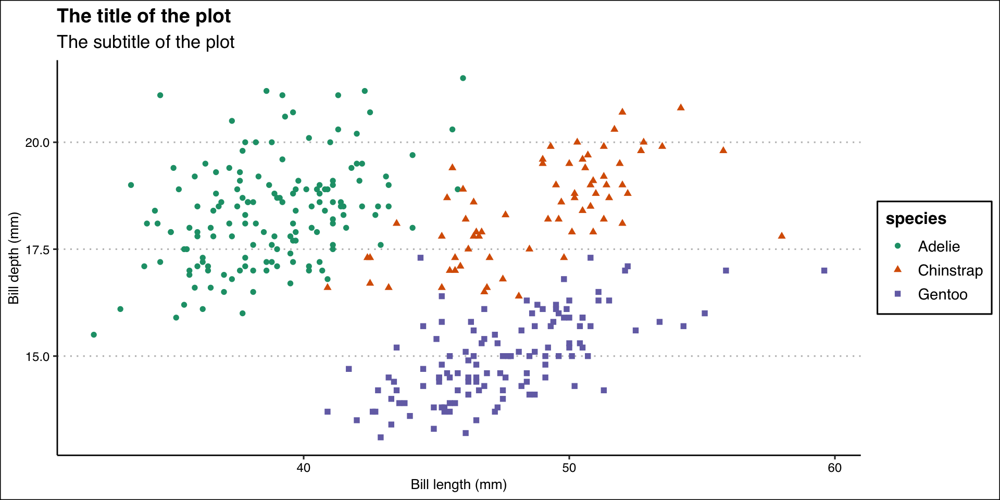
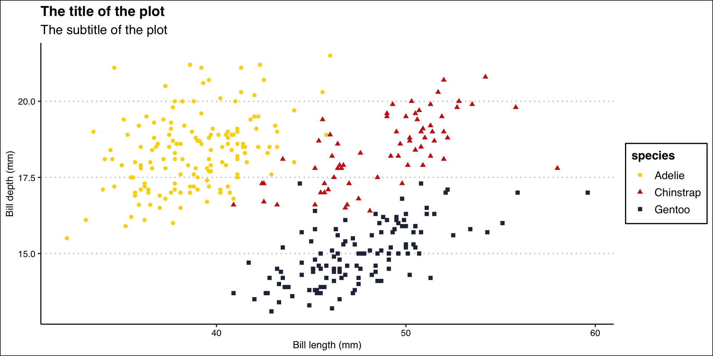

Data
Visualisation
Data Visualization
“The simple graph has brough more information to the data analyst’s mind than any other device.” - John Tukey
Climate Spiral
Source: NASA Climate Change
The R Graph Gallery
Source: Yan Holtz
Computational Art
Source: Danielle Navarro
Grammar of Graphics
- “
ggplot2implements grammar of graphics, a coherent system for describing and building graphs”
Set-up
Know your Data
Rows: 344
Columns: 8
$ species <fct> Adelie, Adelie, Adelie, Adelie, Adelie, Adelie, Adel…
$ island <fct> Torgersen, Torgersen, Torgersen, Torgersen, Torgerse…
$ bill_length_mm <dbl> 39.1, 39.5, 40.3, NA, 36.7, 39.3, 38.9, 39.2, 34.1, …
$ bill_depth_mm <dbl> 18.7, 17.4, 18.0, NA, 19.3, 20.6, 17.8, 19.6, 18.1, …
$ flipper_length_mm <int> 181, 186, 195, NA, 193, 190, 181, 195, 193, 190, 186…
$ body_mass_g <int> 3750, 3800, 3250, NA, 3450, 3650, 3625, 4675, 3475, …
$ sex <fct> male, female, female, NA, female, male, female, male…
$ year <int> 2007, 2007, 2007, 2007, 2007, 2007, 2007, 2007, 2007…Ultimate Goal

ggplot2 Layers

Import Data

Map Variables Aesthetics
Add Geometric Shapes
Key Components are:
Data - which data frame?
Aesthetics (
aes) - which columns map to x, y, colour, size…?Geometry (
geom) - what type of plot? points, bars, lines…
🧠 YOUR TURN
“Fill” Color
“Fill” Colors
“Fill” Colors vs “Color” Colors
📝 YOUR TURN
Plot A Continuous Variable
🧠 YOUR TURN
Two Continuous Variables
Geom Size
Geom Shape
📝 YOUR TURN
Plot A Factor & Factor
Plot A Factor & Continuous
A Factor & Two Cont. Variables
A Factor & Two Cont. Variables
Write Labels
Title of the plot
Subtitle of the plot with more information
Title of the x-axis
Title of the y-axis

Different Shapes
- Each level of the factor/category can be shown using a different shape of different color.

Various Themes
Various Themes
Various Themes
Various Themes
Color Palette

Color Palette
R package ggthemes have function to use color scheme for colorblindness. Know more
ggplot(data = penguins,
mapping = aes(x = bill_length_mm, y = bill_depth_mm)) +
geom_point(aes(color = species, shape = species)) +
labs(
title = "The title of the plot",
subtitle = "The subtitle of the plot",
x = "Bill length (mm)",
y = "Bill depth (mm)"
) +
theme_clean() +
scale_color_colorblind()
Color Palette
ggplot(data = penguins,
mapping = aes(x = bill_length_mm, y = bill_depth_mm)) +
geom_point(aes(color = species, shape = species)) +
labs(
title = "The title of the plot",
subtitle = "The subtitle of the plot",
x = "Bill length (mm)",
y = "Bill depth (mm)"
) +
theme_clean() +
scale_color_brewer(palette = "Dark2")
Color Palette
[1] "BottleRocket1" "BottleRocket2" "Rushmore1"
[4] "Rushmore" "Royal1" "Royal2"
[7] "Zissou1" "Zissou1Continuous" "Darjeeling1"
[10] "Darjeeling2" "Chevalier1" "FantasticFox1"
[13] "Moonrise1" "Moonrise2" "Moonrise3"
[16] "Cavalcanti1" "GrandBudapest1" "GrandBudapest2"
[19] "IsleofDogs1" "IsleofDogs2" "FrenchDispatch"
[22] "AsteroidCity1" "AsteroidCity2" "AsteroidCity3" ggplot(data = penguins,
mapping = aes(x = bill_length_mm, y = bill_depth_mm)) +
geom_point(aes(color = species, shape = species)) +
labs(
title = "The title of the plot",
subtitle = "The subtitle of the plot",
x = "Bill length (mm)",
y = "Bill depth (mm)"
) +
theme_clean() +
scale_color_manual(values = wes_palette("BottleRocket2", n = 3))
Export Plot
- Export/save plot as pdf, jpg or png file.
ggplot(data = penguins,
mapping = aes(x = bill_length_mm, y = bill_depth_mm)) +
geom_point(aes(color = species, shape = species)) +
labs(
title = "The title of the plot",
subtitle = "The subtitle of the plot",
x = "Bill length (mm)",
y = "Bill depth (mm)"
) +
theme_clean() +
scale_color_manual(values = wes_palette("BottleRocket2", n = 3))
ggsave("penguins-plot.pdf")
🧑🏽💻👨🏽💻
Question & Answer